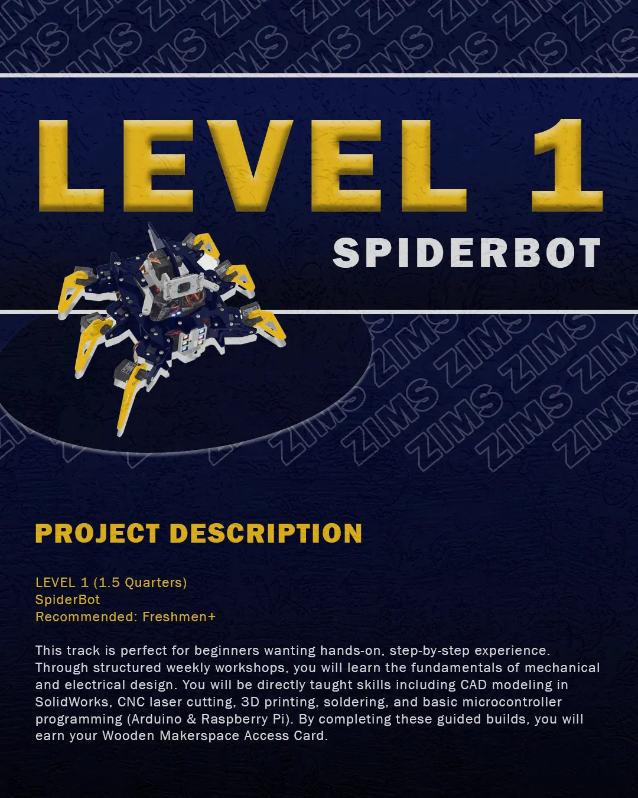

Level 1: Spider Bot
A two quarter program where students will be able to develop skills in 3D printing, Solidworks, manufacturing, soldering, electronics design, and more to build a spider bot capable of overcoming different terrain, culminating in an obstacle course race. Suitable for all skill levels, especially beginners.
Learn more